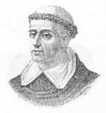

İspanyol engizisyonunun ilk lideri olan Tomas de Torqueda (1420-1498), 15. yy’da kurulan dini mahkemeleri yönetmiş ve binlerce insanı ölüme mahkum etmiştir. “Gizli” Yahudi ve Müslümanları, heretikleri, zina yapanları ve büyücüleri hedef alan engizisyon mahkemeleri, İspanya’daki dini yapının birliğini korumak istemiştir. Ortaya çıkan sonuçsa kuşkusuz ki insanlık tarihinin en acımasız dini bağnazlık örneklerinden biri olmuştur.

Torquemada’nın döneminde kazığa bağlanarak yakılan insanların toplam sayısının 2 bine yaklaştığı tahmin edilmektedir. Pek çok başkaları ise işkence edilmiş ya da zindanlara atılmıştır. Engizisyonun İspanya’da gözden düşmeye başlaması üzerine, Papa 6. Alexander (1431-1503) sonunda Torquemeda’yı dizginlemek zorunda kalmıştır. Bununla birlikte engizisyon bir kurum olarak 19. yy’a kadar varlığını korumayı başarabilmiştir.
Torquemada bir Dominiken keşişiydi. 1479 yılında ülkeyi birleştiren monarklar olan Kral 5. Ferdinand (1452-1516) ve Kraliçe İsabella’nın (1451-1504) yakın dostuydu. İsabella’nın şahsi günah çıkarıcısıydı. Kraliçe ile olan bu yakınlığını sert dini politikalarını savunmak için kullanmıştır. 15. yy’da İspanya, Avrupa’nın dini açıdan en heterojen ülkesiydi. Ülkede geniş bir Yahudi ve Müslüman topluluğu bulunuyordu. Torquemada ve pek çok başka İspanyol Katolik, bu durumu ulusal birliğe karşı bir tehdit olarak algılıyordu. Görünüşte Katolik olup gizlice eski dinlerine ait ritüelleri yerine getirenler büyük bir rahatsızlık kaynağıydı.
1483 yılında monarşi, onu “Büyük Engizisyoncu” olarak atadı. Hızla İspanya’nın birçok yerinde bürolar açtı. Engizisyon yargılamalarına konu olacak suçlar listesini, dini ve ahlaki suçları içine alacak şekilde genişletti. Eşcinsellik ve tefecilik bile engizisyon mahkemelerinin ilgilendiği suçlar listesine girmişti. Yargılamar autos-da-fe adı verilen, dini otoritelerin suçluları cezalandırılmaları için devlete teslim ettiği ayrıntılı seromonilerle son buluyordu.
1494 yılına gelindiğinde yapılan yargılamalar Torquemada’yı, İspanya’da sevilmeyen bir kişi haline getirmişti. Silahlı korumaları ile dolaşmak zorundaydı. Sonunda Papa yetkilerini sınırlandırdı. Yine de Torquemada dört yıl sonra ölene dek resmen Engizisyon sorumlusu olarak kaldı.
Ek Bilgiler
1- İspanyol engizisyonu resmen 1834 yılında feshedildi. Son kaydedilen “auto-da-fe” olayı Meksika’da 1850 yılında yaşandı.
2- 1981 yılında vizyona giren “History of the World: Part I” (Dünya Tarihi: Bölüm 1) adlı komedi filminde Torquemada’yı Mel Brooks (1926-) canlandırmıştı. “Christopher Columbus: The Discovery”de (Christopher Columbus: Keşif) (1992) de Marlon Brando (1924–2004) Torquemada rolündedir.
3- Pek çok sanık, engizisyon mahkemelerinde gıyaben yargılanmıştır. Suçlu bulunmaları halinde kendileri değil kuklaları yakılıyordu.